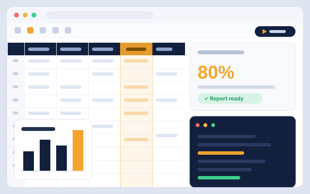
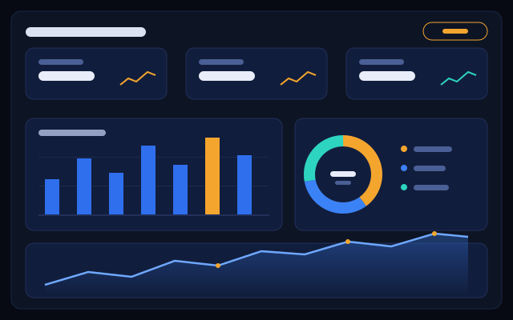

Business Analysis
Understanding processes, identifying inefficiencies, gathering requirements, and turning business needs into clear, buildable solutions.
- Requirement-gathering workshops
- Process mapping & gap analysis
Techno-functional consultant and developer specializing in Odoo ERP, Python automation, and data-driven solutions — bridges the gap between how your business runs and how your systems behave.
I'm an ERP consultant and developer based in Addis Ababa with 5+ years across the full implementation lifecycle — requirement workshops, workflow mapping, configuration, training and post-go-live support. I've configured finance, supply-chain and HR modules for companies across Ethiopia, led critical reconfigurations, and built custom Odoo modules — including one published on the Odoo App Store.
Systems that actually get used — built on understanding, not assumptions.
Understanding processes, identifying inefficiencies, gathering requirements, and turning business needs into clear, buildable solutions.
Implementing, customizing, and extending Odoo to streamline operations and support business growth — from first workshop to post-go-live.
Python tools, integrations, and automations that eliminate repetitive work and increase productivity.
Turning data into insight through analysis and visualization — and exploring ML & AI for better decisions.
the business
the problem
the solution
the system
thoroughly
successfully
continuously
Percentages are honest self-ratings across production work — not tutorial confidence.
An Odoo extension to track and report expired accrual leave with full historical visibility.

Automated Excel reporting and data processing to reduce manual work by 80%.

Data analysis and visualization project to uncover patterns and support business decisions.
End-to-end implementation: workshops, inventory & sales configuration, warehouse mapping, staged go-live.
Chart of accounts, invoicing, payments and month-end close aligned with Ethiopian accounting practice.
Legacy data into Odoo plus third-party and payment-gateway integrations — with validation at every step.
Leading requirement workshops, mapping workflows to Odoo and configuring finance, supply chain and HR modules — primary liaison between clients and developers.
Oversaw a critical system configuration update: analyzed the setup, identified inefficiencies and executed a seamless reconfiguration, with tailored training for every team.
Analyzed business requirements, configured and customized ERP modules, integrated third-party systems, migrated data and ensured smooth implementation.
Supported ERP implementations end to end — configuration, testing, documentation and user enablement across multiple client engagements.
Configured workflows and reports, supported data-migration efforts and helped resolve functional issues during go-live phases.
Started my ERP career gathering requirements, preparing documentation and assisting senior consultants with module configuration and testing.
I spend my free time exploring questions in mathematics, physics, psychology, philosophy, and the nature of intelligence — and I'm turning that exploration into a set of written notes.
Tell me about your process, your system, or the spreadsheet that's slowly eating your team. I usually reply within a day.